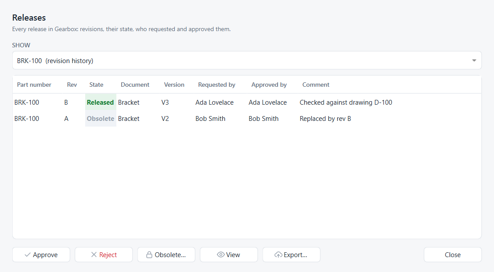
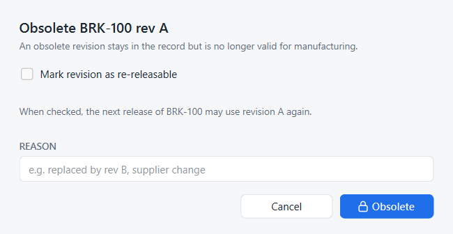

Revision history and obsolete revisions
Goal: release revision B of the bracket, retire revision A, and send revision B to a supplier.
You need: a part number with at least one released revision, see Release a design.
This tutorial follows Onshape’s Viewing revision history and obsoleting parts help page.
Release the next revision
-
Make the change, for example a thinner base plate, and create a version, here V3 – Production release.
-
Release V3 as in Release a design. The bracket keeps part number BRK-100; Strata proposes revision B.
-
If approval is required, approve it in Releases, with a comment such as Checked against drawing D-100.
Open the revision history
Right-click the version node that carries the BRK-100 chip and choose Revision history of BRK-100…. Or open Releases (Ctrl+Shift+R) and choose BRK-100 (revision history) under Show.

Revisions are listed newest first, with their state, the version they were released from, who requested and approved them, and the comment.
Mark the old revision obsolete
-
Select revision A and click Obsolete….
-
Enter a reason, for example Replaced by rev B.
-
Leave Mark revision as re-releasable unticked: revision A stays used. Tick it only if A never reached production and its letter may be given to a later release.
-
Click Obsolete.

Revision A now reads Obsolete with the reason. It stays in the record, and View still opens it, but it is no longer valid for manufacturing.
Export a released revision
-
Select revision B and click Export….
-
Choose a folder.
Strata writes BRK-100_revB.FCStd, the document exactly as released, and BRK-100_revB.step with its visible solids, ready for a supplier. Your working documents are not touched.
Same thing in Python
# SPDX-License-Identifier: LGPL-2.1-or-later
"""Minimal working example: reject and resubmit, revision history, obsolete, numeric revisions, export.
Run with FreeCAD's console (Strata installed):
freecadcmd revision_history.py [empty-folder]
"""
import os
import sys
import tempfile
import FreeCAD as App
from strata import fc
from strata.project import Project
folder = next((a for a in sys.argv[1:] if not a.endswith(".py")), None) or tempfile.mkdtemp()
path = os.path.join(folder, "Project", "Bracket.FCStd")
os.makedirs(os.path.dirname(path))
doc = App.newDocument("Bracket")
plate = doc.addObject("Part::Box", "Plate")
plate.Length, plate.Width, plate.Height = 60, 40, 12
doc.recompute()
doc.saveAs(path)
project = Project.create(os.path.dirname(path), "Ada Lovelace", "ada@example.com")
def change(height, version):
plate.Height = height
doc.recompute()
doc.save()
project.record()
return project.create_version(version)
# Submitted for approval, rejected with a reason: the revision letter stays free
v1 = project.create_version("V1", "First article")
rev = project.release(v1, "Bracket.FCStd", "BRK-100", approval=True)
project.set_release_state(rev, "Rejected", "Hole pattern does not match drawing")
print("Next revision after a rejection:", project.next_revision("BRK-100"))
# Fixed and resubmitted under the same revision, then approved
rev = project.release(change(10, "V1.1"), "Bracket.FCStd", "BRK-100", approval=True)
project.set_release_state(rev, "Released", "Checked against drawing D-100")
# Revision B replaces A; A becomes obsolete
rev_b = project.release(change(8, "V2"), "Bracket.FCStd", "BRK-100")
project.set_release_state(rev, "Obsolete", "Replaced by rev B")
print("Revision history of BRK-100:")
for r in project.revision_history("BRK-100"):
print(" rev %s attempt %d %-9s from %-4s %s" % (r.revision, r.attempt, r.state, r.version, r.comment))
# Numbered revisions for new part numbers
project.save_settings({"revision_scheme": "numeric"})
print("First numeric revision of SFT-200:", project.next_revision("SFT-200"))
# Export revision B for a supplier: the document as released plus a STEP file
out = fc.export_revision(project, rev_b.sha, rev_b.document, os.path.join(folder, "Released"), "BRK-100_revB")
print("Exported:", ", ".join(os.path.basename(f) for f in out))
App.closeDocument(doc.Name)
project.repo.close()freecadcmd revision_history.pyNext revision after a rejection: A
Revision history of BRK-100:
rev B attempt 1 Released from V2
rev A attempt 2 Obsolete from V1.1 Replaced by rev B
rev A attempt 1 Rejected from V1 Hole pattern does not match drawing
First numeric revision of SFT-200: 1
Exported: BRK-100_revB.FCStd, BRK-100_revB.step